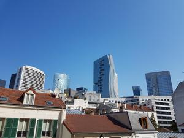
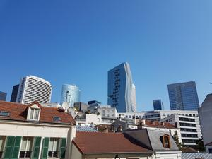

Situé au 2ème étage dans un immeuble de standing au sein d'un quartier calme, l'appartement est un 2 pièces de 50 m² avec une vue dégagée sur les tours de la défense.
- Cave et garage (box individuel fermé) compris dans la location
- Accès digicode + interphone ou vigic
- Gardien présent dans l'immeuble
- Proche commerces et transports en commun - métro 1 (esplanade de la défense) & T2 (puteaux)
- A proximité de la défense

 
